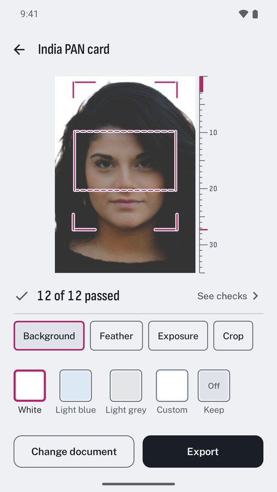
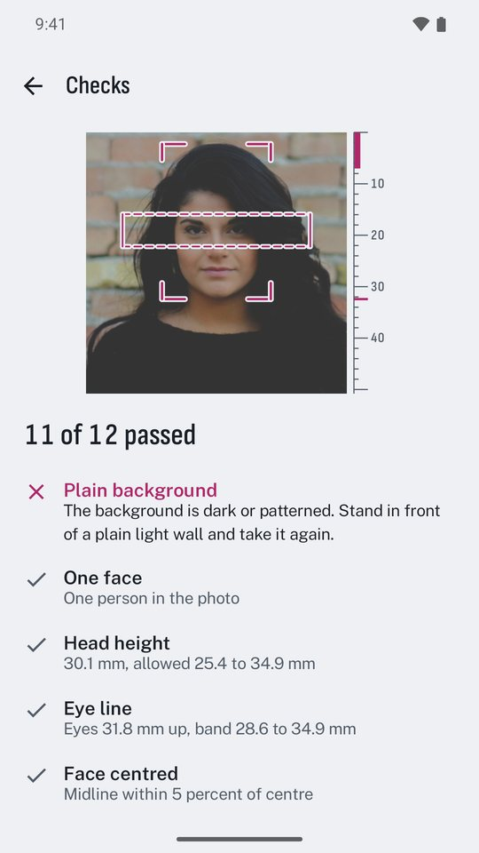
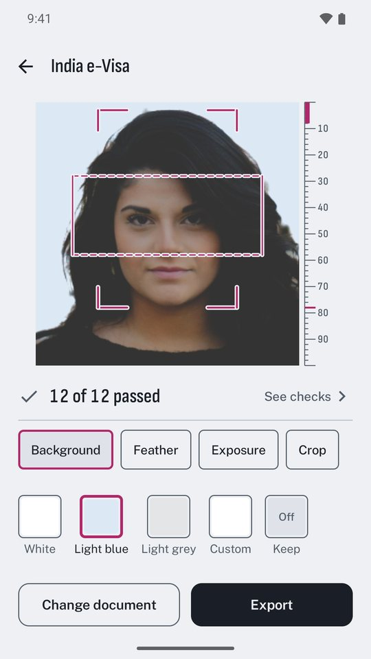
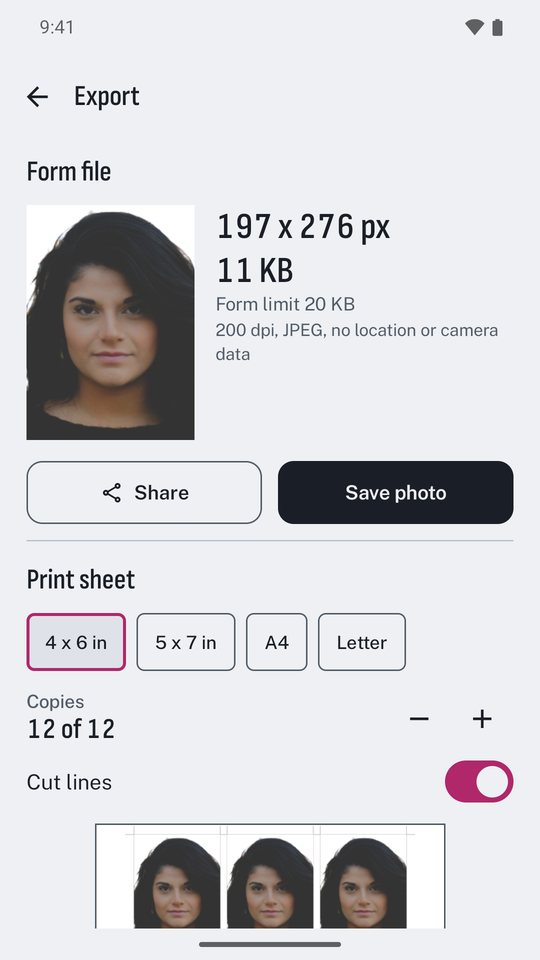
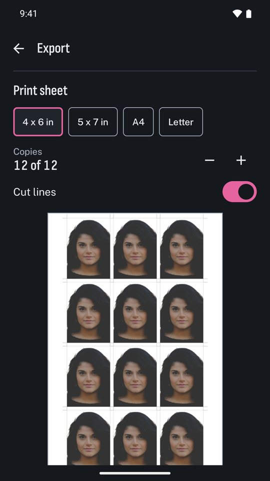

A camera frame that shows where crown, chin and eyes must fall, a new background, and a file sized for the form.
Get it on Google PlayUSD 3.99 once, INR 149 in India. No ads, no subscription, no account. Works fully offline.

Every rule shows where it came from and the date it was checked. Add your own size in millimetres or pixels.

Cropmark measures the photo against the document's rule and tells you what to fix while you are still at home.



Cropmark has no internet permission. Face detection and background removal run on the device, photos stay in the app's own storage, and you can back everything up to one file you keep.
Cropmark is not affiliated with any government. The issuing office decides whether a photo is accepted.